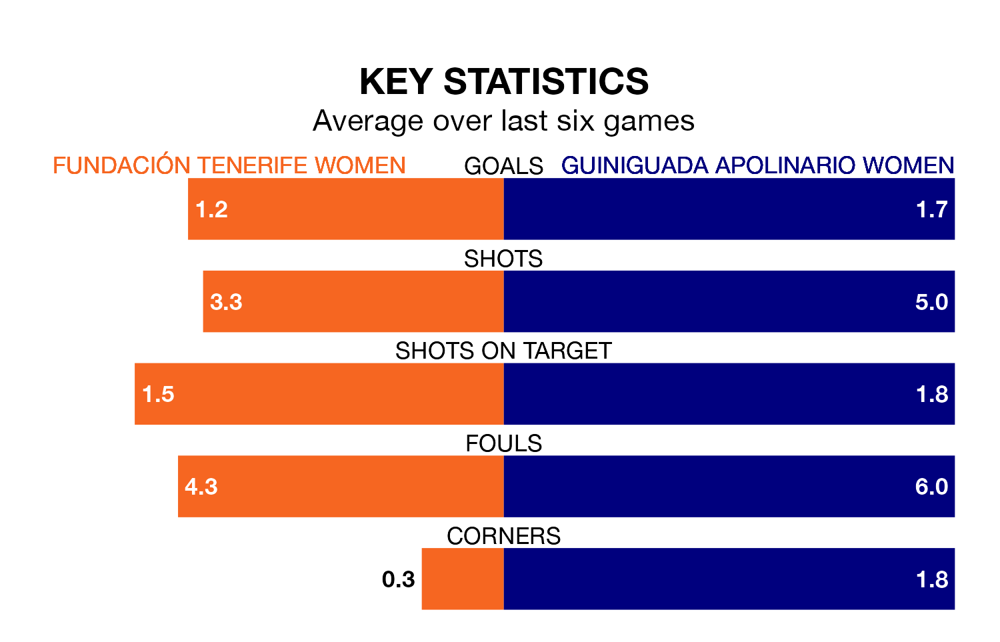

Guiniguada Apolinario Women travel for Saturday's early match against Fundación Tenerife Women looking to bounce back from defeat last time out in Segunda Federación Femenina.
Guiniguada Apolinario, who sit zero in the league after 14 games, fell to a 2-1 home defeat to Unión Viera Women on December 9.
They face a Fundación Tenerife side who picked up a win in their last match, a 1-0 victory against La Solana Women, and who sit ninth in the table.
With 17 goals in 14 games so far this season, Guiniguada Apolinario are the league's joint--4th-lowest scorers with 1.2 goals per game. And they are conceding more than average, letting in 20 goals at a rate of 1.4 per game.
Fundación Tenerife, meanwhile, are average scorers, with 1.3 goals per game. They have conceded 0.9 goals per game.
The hosts are in reasonable form in Segunda Federación Femenina, with three wins and two draws from their last six games.
With three wins and three losses over that period, the away team's form is slightly worse – they have taken nine points from 18, compared to Fundación Tenerife's 11.
Updated: 13:38 (UTC), 10/01/24